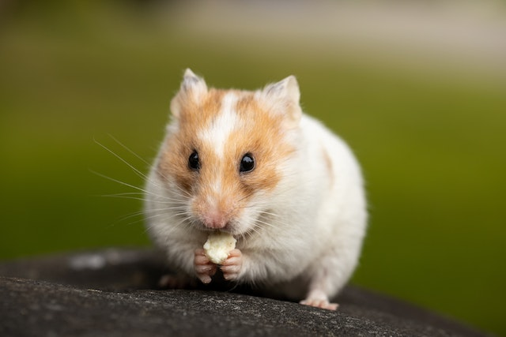

Cat
From Wikipedia: Cat

The cat (Felis catus) is a domestic species of small carnivorous mammal.[1][2] It is the only domesticated species in the family Felidae and is commonly referred to as the domestic cat or house cat to distinguish it from the wild members of the family.[4] Cats are commonly kept as house pets but can also be farm cats or feral cats; the feral cat ranges freely and avoids human contact.[5] Domestic cats are valued by humans for companionship and their ability to kill rodents. About 60 cat breeds are recognized by various cat registries.[6] The cat is similar in anatomy to the other felid species: it has a strong flexible body, quick reflexes, sharp teeth, and retractable claws adapted to killing small prey. Its night vision and sense of smell are well developed. Cat communication includes vocalizations like meowing, purring, trilling, hissing, growling, and grunting as well as cat-specific body language. Although the cat is a social species, it is a solitary hunter. As a predator, it is crepuscular, i.e. most active at dawn and dusk. It can hear sounds too faint or too high in frequency for human ears, such as those made by mice and other small mammals.[7] It also secretes and perceives pheromones.[8]
Dog
From Wikipedia: Dog

The dog (Canis familiaris[4][5] or Canis lupus familiaris[5]) is a domesticated descendant of the wolf. Also called the domestic dog, it is derived from the extinct Pleistocene wolf,[6][7] and the modern wolf is the dog's nearest living relative.[8] Dogs were the first species to be domesticated[9][8] by hunter-gatherers over 15,000 years ago[7] before the development of agriculture.[1] Due to their long association with humans, dogs have expanded to a large number of domestic individuals[10] and gained the ability to thrive on a starch-rich diet that would be inadequate for other canids.[11] The dog has been selectively bred over millennia for various behaviors, sensory capabilities, and physical attributes.[12] Dog breeds vary widely in shape, size, and color. They perform many roles for humans, such as hunting, herding, pulling loads, protection, assisting police and the military, companionship, therapy, and aiding disabled people. Over the millennia, dogs became uniquely adapted to human behavior, and the human-canine bond has been a topic of frequent study.[13] This influence on human society has given them the sobriquet of "man's best friend".[14]
Hamster
From Wikipedia: Hamster
Hamsters are rodents (order Rodentia) belonging to the subfamily Cricetinae, which contains 19 species classified in seven genera.[1][2] They have become established as popular small pets.[3] The best-known species of hamster is the golden or Syrian hamster (Mesocricetus auratus), which is the type most commonly kept as pets. Other hamster species commonly kept as pets are the three species of dwarf hamster, Campbell's dwarf hamster (Phodopus campbelli), the winter white dwarf hamster (Phodopus sungorus) and the Roborovski hamster (Phodopus roborovskii). Hamsters are more crepuscular than nocturnal and, in the wild, remain underground during the day to avoid being caught by predators. They feed primarily on seeds, fruits, and vegetation, and will occasionally eat burrowing insects.[4] Physically, they are stout-bodied with distinguishing features that include elongated cheek pouches extending to their shoulders, which they use to carry food back to their burrows, as well as a short tail and fur-covered feet.